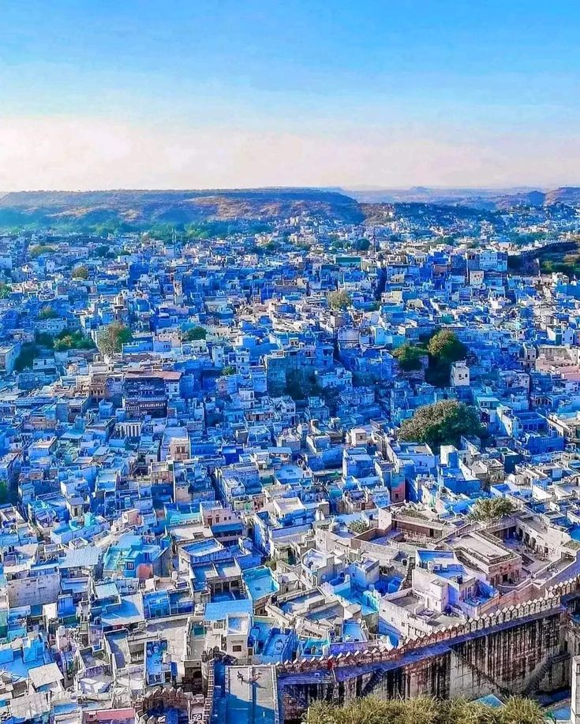
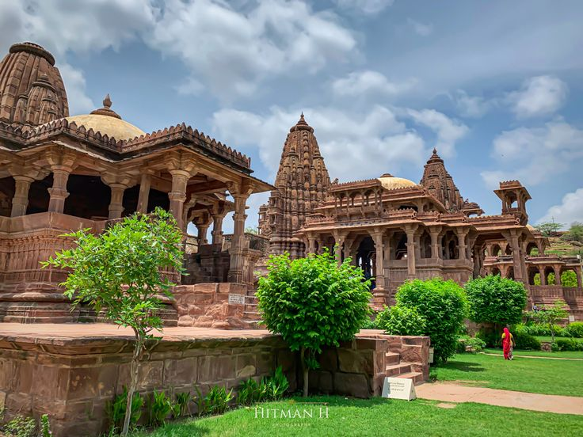
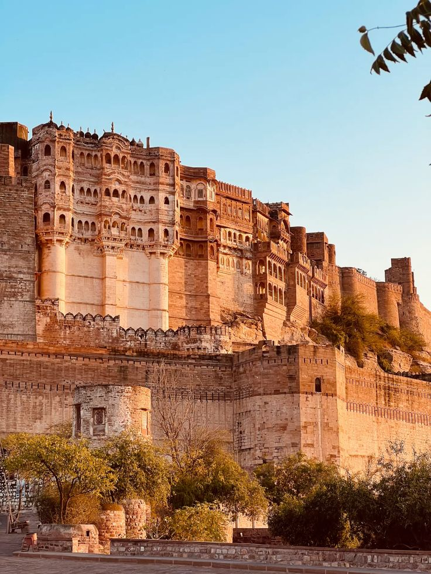
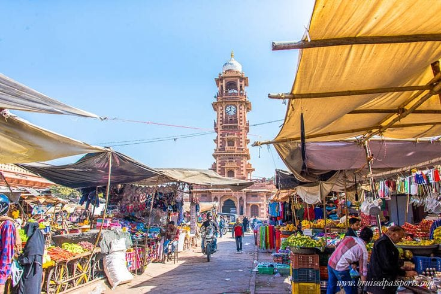
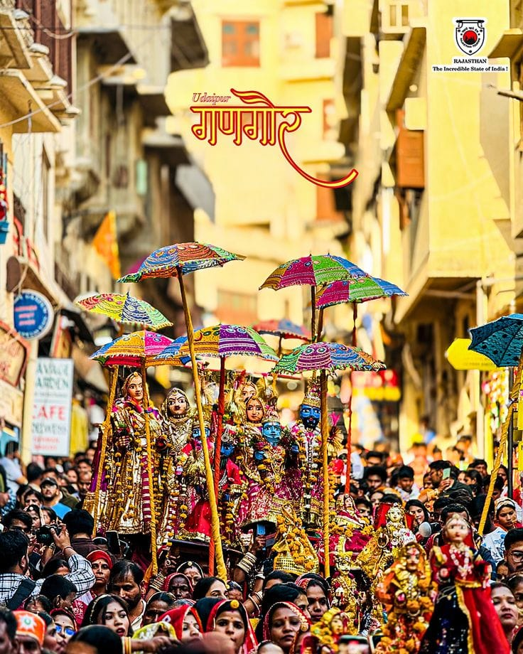
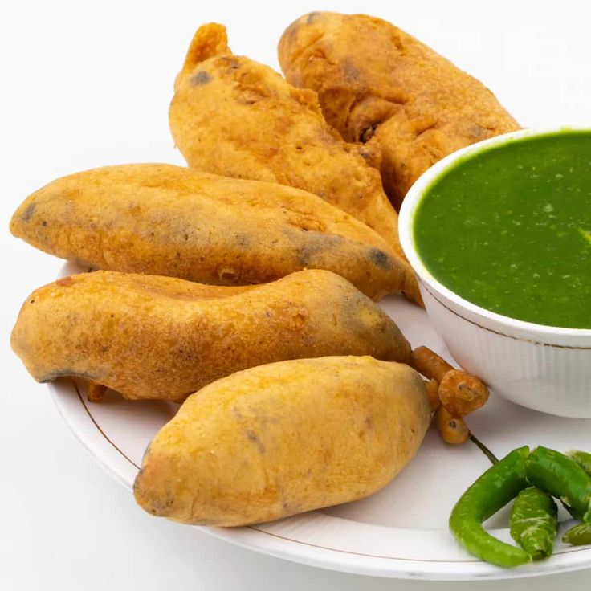

Jodhpur Over_all View
Jodhpur, the “Blue City,” is famous for its blue-painted houses, majestic forts, and desert charm. It is a vibrant destination that reflects Rajasthan’s royal heritage and colorful culture.
Peaceful Nature Spot (Mandore Gardens)
Mandore Gardens are a peaceful retreat with temples, cenotaphs, and lush greenery. They offer a calm escape from the bustling city and showcase Jodhpur’s historical legacy.


Historical Place (Mehrangarh Fort)
Mehrangarh Fort is one of the largest forts in India, towering over Jodhpur. Built in the 15th century, it features palaces, museums, and stunning views of the Blue City.
Local Market (Sardar Market)
Sardar Market near the Clock Tower is a bustling bazaar offering spices, handicrafts, textiles, and souvenirs. It is a lively place to experience Jodhpur’s local culture.


Famous Festival (Marwar Festival)
The Marwar Festival celebrates the culture and traditions of the Marwar region. Folk music, dance, and camel shows make it a colorful and vibrant event.
Famous Local Food Items (Meals → Mirchi Bada)
Mirchi Bada is a spicy snack from Jodhpur, made with large green chilies stuffed and fried. It is a local favorite and a must-try street food.
